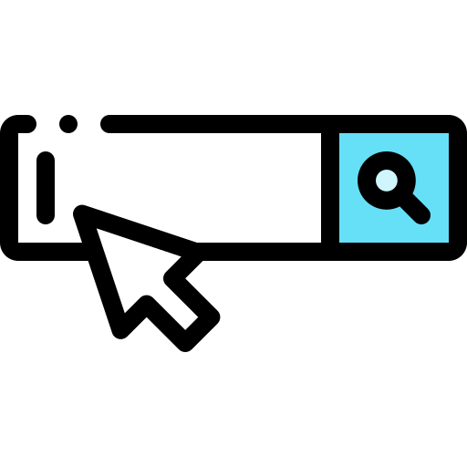

Windows OS hotkeys
Ctrl Hotkeys
-
 Ctrl + C: Copy
Ctrl + C: Copy -
 Ctrl + V: Paste
Ctrl + V: Paste -
 Ctrl + X: Cut
Ctrl + X: Cut -
 Ctrl + Z: Undo
Ctrl + Z: Undo -
 Ctrl + Y: Redo
Ctrl + Y: Redo -
 Ctrl + A: Select All
Ctrl + A: Select All -
 Ctrl + F: Find
Ctrl + F: Find -
 Ctrl + S: Save
Ctrl + S: Save -
 Ctrl + P: Print
Ctrl + P: Print -
 Ctrl + N: New window
Ctrl + N: New window -
Ctrl + Tab: Switch between tabs in a browser
-
 Ctrl + D: Add the current page to bookmarks in a browser
Ctrl + D: Add the current page to bookmarks in a browser -
 Ctrl + Shift + Esc
Ctrl + Shift + Esc -
Ctrl + Shift + Z: Undo the Ctrl + Z action
-
 Ctrl + Shift + T: Reopen last closed tab in a browser
Ctrl + Shift + T: Reopen last closed tab in a browser
Alt Hotkeys
-
 Alt + Tab:
Alt + Tab:
Switch between open windows -
Alt + F4:
Close the current window -
Alt + Space:
Open window's control menu -

Alt + D:
Focus on the search bar in a browser